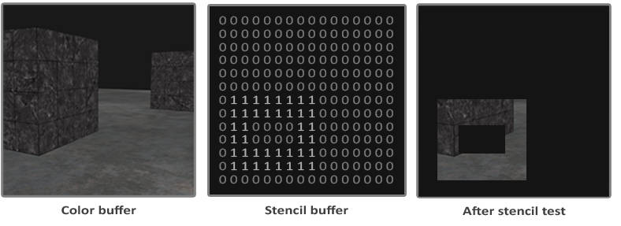
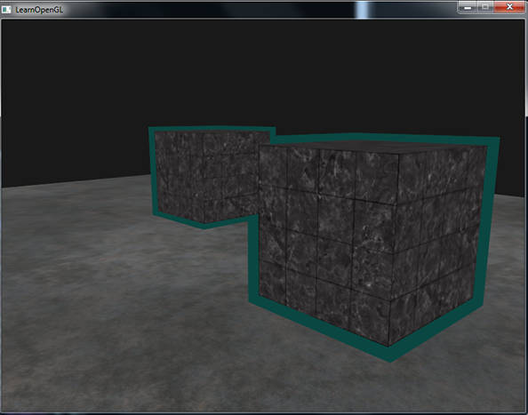

深度测试和模板测试发生在片段着色器处理之后，处理单位是一个片段。
在 3D 场景中，同一个屏幕像素可能被多个物体覆盖。为了判断最终应该显示哪个物体，OpenGL 使用 深度测试（Depth Testing）。
深度测试的基本原则是：
比较当前 Fragment 与该屏幕位置上已经保存的深度，通常让距离相机更近的 Fragment 通过测试。
深度缓冲（Depth Buffer / Z-Buffer） 是一块与屏幕像素对应的缓冲区，每个像素位置保存一个深度值。
可以简单理解为：
Color Buffer Depth Buffer
(x, y) → 最终颜色 (x, y) → 当前最近的深度
当一个 Fragment 准备写入屏幕时：
当前 Fragment
│
│ depth = 0.4
▼
读取 Depth Buffer
│
│ oldDepth = 0.6
▼
比较 0.4 < 0.6
│
├─ true → Fragment 通过
│ 写入颜色
│ Depth Buffer 更新为 0.4
│
└─ false → Fragment 被丢弃
因此，深度测试解决的是 3D 场景中的前后遮挡关系。
使用：
glEnable(GL_DEPTH_TEST);
开启深度测试。
每一帧开始绘制之前，除了清除颜色缓冲，还需要清除上一帧留下的深度值：
glClear(GL_COLOR_BUFFER_BIT | GL_DEPTH_BUFFER_BIT);
典型代码：
glEnable(GL_DEPTH_TEST);
while (!glfwWindowShouldClose(window))
{
glClear(GL_COLOR_BUFFER_BIT | GL_DEPTH_BUFFER_BIT);
// 绘制场景...
}
默认的深度比较函数是：
glDepthFunc(GL_LESS);
即：
当前 Fragment depth < Depth Buffer depth
时通过测试。
例如：
Depth Buffer 当前值 = 0.7
Fragment A：
depth = 0.4
0.4 < 0.7
→ 通过
→ Depth Buffer 更新为 0.4
Fragment B：
depth = 0.6
0.6 < 0.4
→ 失败
→ Fragment 被丢弃
因此，即使 B 在 A 之后绘制，因为它位于 A 后面，也不会覆盖 A。
OpenGL 还支持其他比较方式：
GL_LESS // <
GL_LEQUAL // <=
GL_GREATER // >
GL_GEQUAL // >=
GL_EQUAL // ==
GL_NOTEQUAL // !=
GL_ALWAYS // 永远通过
GL_NEVER // 永远失败
默认使用 GL_LESS。
Depth Buffer 的存储空间有限，因此只能保存有限数量的离散深度值。
为了方便理解，假设 Depth Buffer 只能保存三位小数：
0.000
0.001
0.002
...
0.998
0.999
1.000
相邻两个可表示值之间相差：
0.001
可以把它理解成 Depth Buffer 的一个“刻度”。
如果两个理论深度非常接近：
0.5001
0.5002
最终可能因为存储精度有限而变成相同的深度值。
因此：
深度精度表示 Depth Buffer 区分两个相近物体深度的能力。
Depth Buffer 中保存的深度值位于 [0, 1] 范围。由于 Depth Buffer 的存储位数有限，它只能表示有限数量的深度值，也就是深度精度是有限的。
为了方便理解，假设 Depth Buffer 只能保存三位小数：
0.000
0.001
0.002
...
0.998
0.999
1.000
可以把 0.001 理解成一个深度“刻度”。
需要注意：
非线性深度并不是说 Depth Buffer 自身的刻度不均匀，而是 View Space 中的深度距离到 Depth 值的映射是非线性的。
假设：
near = 0.1
far = 100
如果把 View Space 中距离相机的深度 z 线性映射到 [0,1]，可以使用：
这种情况下，Depth Buffer 中均匀的刻度映射回 View Space 后也是均匀的：
Near Far
|----|----|----|----|----|----|----|----|
也就是说：
一个 Depth 刻度在近处和远处，都对应大致相同的 View Space 距离。
因此有限的深度精度被平均分配给 Near 到 Far 的整个范围。LearnOpenGL 将这种映射作为线性深度的对照，但实际透视投影并不采用这种深度分布。
在透视投影中，最终深度大致与 1/z 有关，可以表示为：
因此 View Space 中相同大小的距离变化，在 Near 和 Far 附近会产生完全不同的 Depth 变化。
仍然假设：
near = 0.1
far = 100
大致有：
View Space 深度 Depth
0.1 0.000
0.2 0.501
1 0.901
10 0.991
50 0.999
100 1.000
可以看到：
z = 0.1 → 0.2
View Space 中只移动了 0.1，却使用了 Depth Buffer 大约：
0.000 → 0.501
一半的数值范围。
而：
z = 10 → 100
View Space 中跨越了 90 个单位，Depth 却只从大约：
0.991 → 1.000
变化了一点点。
所以：
depth = 0.5并不表示物体处于 Near 和 Far 的中间，而实际上仍然非常靠近 Near。
假设 Depth Buffer 中相邻两个可表示值始终相差：
0.001
Depth Buffer 自身的刻度仍然可以看成均匀的：
Depth：
0 1
|--|--|--|--|--|--|--|--|--|--|--|--|
但是由于：
View Space z → Depth
是非线性的，这些均匀的 Depth 刻度映射回 View Space 后会变成：
View Space：
Near Far
||||||||||||||| | | | | |
精度高 精度低
也就是说：
因此 Near 附近两个非常接近的表面，更容易被 Depth Buffer 区分；Far 附近则需要更大的距离差才能被区分。
这就是所谓：
Near 深度精度高，Far 深度精度低。
这种分配比线性平均分配更加适合透视场景：距离相机很近的物体通常在屏幕上更大、细节更多，因此更需要精确地区分前后关系；而非常远的物体，对微小深度差异的需求通常没有那么高。LearnOpenGL 因此指出，没有必要让距离相机 1 个单位和 1000 个单位的位置拥有完全相同的深度精度。
可以把线性与非线性的区别记成：
线性深度：
Depth Buffer：
|--|--|--|--|--|--|--|
↓ 映射到 View Space
Near Far
|----|----|----|----|----|----|
精度平均分配
非线性深度：
Depth Buffer：
|--|--|--|--|--|--|--|
↓ 映射到 View Space
Near Far
||||||||||| | | | | |
精度高 精度低
因此：
非线性深度并没有增加 Depth Buffer 可以表示的深度值数量，而是改变了这些有限深度值在 View Space 中的分布：更多精度集中在 Near，较少精度分配给 Far。
这也是理解透视投影深度精度最重要的一点。
模板测试和深度测试一样，它可能会丢弃片段，接下来被保留的片段会进入深度测试，深度测试可能会丢弃更多片段。模板测试是根据又一个缓冲来进行的，它叫做模板缓冲(Stencil Buffer)。
一个模板缓冲中，（通常）每个模板值(Stencil Value)是8位的。所以每个像素/片段一共能有256种不同的模板值。我们可以将这些模板值设置为我们想要的值，然后当某一个片段有某一个模板值的时候，我们就可以选择丢弃或是保留这个片段了。
使用模板测试的一个例子：

实现的步骤：
模板缓冲写入后，在同一个（或者接下来的）帧中，可以读取这些值，来决定丢弃还是保留某个片段。
启用模板测试:
glEnable(GL_STENCIL_TEST);
每次迭代需要清除模板缓冲：
glClear(GL_COLOR_BUFFER_BIT | GL_DEPTH_BUFFER_BIT | GL_STENCIL_BUFFER_BIT);
和深度测试的 glDepthMask 函数一样，模板缓冲也有一个类似的函数。glStencilMask 允许我们设置一个位掩码(Bitmask)，它会与将要写入缓冲的模板值进行与(AND)运算。默认情况下设置的位掩码所有位都为1，不影响输出，但如果我们将它设置为 0x00，写入缓冲的所有模板值最后都会变成 0.这与深度测试中的 glDepthMask(GL_FALSE) 是等价的。
glStencilMask(0xFF); // 每一位写入模板缓冲时都保持原样
glStencilMask(0x00); // 每一位在写入模板缓冲时都会变成0（禁用写入）
大部分情况下你都只会使用0x00或者0xFF作为模板掩码(Stencil Mask)，但是知道有选项可以设置自定义的位掩码总是好的。
首先介绍下两个相关 api 的职责：
glStencilFunc(GLenum func, GLint ref, GLuint mask);
三个参数分别是：
func → 怎么比较
ref → 拿什么值和模板缓冲比较
mask → 比较之前，对两边哪些 bit 参与比较
func 支持的枚举包括：GL_NEVER、GL_LESS、GL_LEQUAL、GL_GREATER、GL_GEQUAL、GL_EQUAL、GL_NOTEQUAL和GL_ALWAYS。
准确来说，OpenGL 实际比较的是：
(ref & mask) func (stencilValue & mask)
其中 stencilValue 是当前像素位置已经存储在模板缓冲中的值。
举个例子：
glStencilFunc(GL_EQUAL, 1, 0xFF);
假设模板缓冲当前位置：
Stencil Buffer = 1
因为：
ref = 1
mask = 0xFF
0xFF 的二进制是：
11111111
所以所有 bit 都参与比较：
1 & 11111111 = 1
1 & 11111111 = 1
最终：
1 == 1
模板测试：通过
Fragment 可以继续进入后面的测试阶段。
如果当前位置是：
Stencil Buffer = 0
那么 1 == 0 判定失败：
Fragment
↓
Stencil Test
↓
失败
↓
丢弃
glStencilFunc 只负责"判断"，不负责"怎么修改"。
函数：
glStencilOp(
GLenum sfail,
GLenum dpfail,
GLenum dppass
);
为什么有三个参数？
因为一个 Fragment 最终可能出现三种情况：
Fragment
│
▼
Stencil Test
/ \
失败 通过
│ │
sfail ▼
Depth Test
/ \
失败 通过
│ │
dpfail dppass
这是 glStencilOp 三个参数最重要的理解方式。模板测试发生在通常的深度测试之前；如果模板测试失败，就不会进入正常的后续深度测试路径。
sfail：模板测试失败时采取的行为。dpfail：模板测试通过，但深度测试失败时采取的行为。dppass：模板测试和深度测试都通过时采取的行为。每个选项可以选用以下其中一种行为：
用模板测试绘制物体轮廓，如图：

它的实现主要方法是：
我们不考虑图片中的地板，只考虑箱子和轮廓的绘制。
首先第一步正常绘制箱子，同时标记箱子的区域为 1：
glStencilOp(GL_KEEP, GL_KEEP, GL_REPLACE);
glStencilFunc(GL_ALWAYS, 1, 0xFF);
glStencilMask(0xFF);
DrawTwoContainers();
意味着：
Stencil Test 失败
→ KEEP
Stencil Test 通过，但 Depth Test 失败
→ KEEP
Stencil Test + Depth Test 都通过
→ REPLACE
而 GL_REPLACE 会把模板值写成 glStencilFunc 中的 ref： ref = 1。所以只有真正通过模板测试和深度测试、实际绘制出来的箱子 Fragment，其对应的 Stencil Buffer 会被写成 1。
接下来第二步需要画一个“稍微大的箱子”，并且只在 Stencil Buffer 值不等于 1 的时候才通过测试，写入 color buffer。
放大箱子：
model = glm::mat4(1.0f); // 原来的模型矩阵
model = glm::scale(
model,
glm::vec3(1.1f)
); // 放大箱子的模型矩阵
只在 Stencil != 1 时才能通过模板测试。
glStencilFunc(GL_NOTEQUAL, 1, 0xFF);
glStencilMask(0x00);
另外第二遍绘制时，需要使用单色 Shader 作为高亮颜色。
最后需要恢复 OpenGL 状态，避免影响下一帧或者之后其他物体的绘制。
glStencilMask(0xFF);
glEnable(GL_DEPTH_TEST);
模板测试的核心用途可以概括成一句话：
先在 Stencil Buffer 中标记某些屏幕区域，再让后续绘制只发生在指定区域内或区域外。
所以它特别适合做各种“屏幕空间 Mask”。
常见应用有这些：
物体轮廓 / 选中高亮 就是 LearnOpenGL 当前这个例子。第一遍绘制物体时，把物体区域标记成 Stencil = 1；第二遍绘制放大的物体，只允许 Stencil != 1 的区域通过，于是只剩外围轮廓。
原物体区域 → Stencil = 1
放大物体：
Stencil == 1 → 不画
Stencil != 1 → 画
最终得到轮廓
限定绘制区域 / Mask 例如先画一个圆，并只写 Stencil：
0000000
001111100
011111110
001111100
0000000
然后设置：
glStencilFunc(GL_EQUAL, 1, 0xFF);
后续场景只会显示在这个圆形区域中。它的本质就是：
“只允许在某个形状内部绘制。”
镜子 / 传送门 / 窗口效果 这是 Stencil Buffer 很经典的应用。
例如场景中有一面镜子：
+-----------------------+
| |
| +---------+ |
| | 镜子 | |
| +---------+ |
| |
+-----------------------+
可以先把镜子的屏幕区域写成：
Stencil = 1
然后绘制镜像场景时：
glStencilFunc(GL_EQUAL, 1, 0xFF);
这样镜像场景只会出现在镜子区域里，而不会绘制到整个屏幕。
传送门也是类似：
Portal 区域
↓
Stencil = 1
↓
另一个场景只允许在 Stencil == 1 中绘制
平面阴影（Planar Shadow） 一些传统实时渲染方法会把物体投影到地面生成阴影。Stencil Buffer 可以用来限制阴影：
只允许阴影绘制在地板区域
或防止同一片区域被阴影重复混合多次。
防止重复绘制某个区域 Stencil 不一定只是 0/1，也可以做计数。
例如第一次绘制：
Stencil = 1
后续设置：
glStencilFunc(GL_EQUAL, 0, 0xFF);
就可以实现：
已经处理过的像素不再处理。
因此它可以用于一些多 Pass 渲染算法中的区域控制。
光照体积 / Deferred Rendering 在延迟渲染中，如果点光源只影响一个球形范围：
光源
*
/ \
/ sphere \
\ /
\ /
可以通过 Stencil Buffer 标记光照体积对应的像素，只对这些区域进行后续光照计算，避免整个屏幕都计算这个光源。
这是比物体轮廓更高级的一种 Stencil 用法。
复杂裁剪区域 glScissor 只能简单裁剪一个矩形：
+----------+
| 可绘制区 |
+----------+
而 Stencil 可以使用任意几何形状：
****
** **
* *
** **
****
所以如果需要：
“只在一个任意形状区域内绘制”
Stencil Buffer 会比 Scissor Test 灵活很多。
可以把这些应用统一理解成一种模式：
Pass 1：
绘制某些几何体
↓
不一定关心颜色
↓
在 Stencil Buffer 中生成 Mask
Pass 2：
绘制真正内容
↓
读取 Stencil Buffer
↓
Stencil == ? / != ?
↓
只允许指定区域的 Fragment 通过
所以模板缓冲最重要的能力其实不是“模板测试”这个名字，而是：
它提供了一张与屏幕像素对应的、可由几何体生成的整数 Mask。
这也是它和 Depth Buffer 的明显区别：
Depth Buffer
→ 主要回答：谁在前、谁在后？
Stencil Buffer
→ 主要回答：这个像素属于哪个区域？允许不允许画？
（完）